image
multfile int filename
intfile format. If int !=0 will used the multiple images defined in filename to optimize the lens parameters and/or the unknown redshift(s) of multiple images.
The format of filename can be 1, 2, or 3 (see DataFiles) Typically the format is 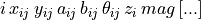
where i is an identifier for all the multiple images of a single source at redshift 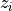. 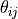 is  along the East-West axis, and increasing counter-clockwise. mag is the magnitude of the image. It is used in the flux optimisation mode.
along the East-West axis, and increasing counter-clockwise. mag is the magnitude of the image. It is used in the flux optimisation mode.
In the same file the user can put different families of multiple images. Here is an example of 2 families of multiple images:
C1a 20.5 30.4 1.2 0.6 40. 0.65 0.
C1b 30.8 20.3 1.3 0.6 50. 0.65 0.
C1c 25.1 25.2 1.2 0.5 60. 0.65 0.
C2a 10.3 -5.2 1.2 0.9 10. 0. 0.
C2b -9.7 -4.2 1.4 0.5 20. 0. 0.
The redshift of the second family of multiple images in this example is not known, therefore the redshift is set to 0 and its convergence can be constraint by the z m limit identifier (see below).
mult_wcs int
If true, the multiple images coordinates are considered absolute WCS coordinates. They are transformed to relative coordinates with the reference keyword position given in the runmode section.
If false, their coordinates are considered relative in arcsec.
This keyword is outdated. Now, the format of the multiple image file must be specified in the header of the file itself, with the #REFERENCE keyword.
forme int
int : 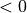 image plane chi2. 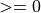 source plane chi2.
Define the way the chi2 is computed. For source plane chi2, it defines how the source plane errors are computed.
0: use an amplification averaged over all the images of a system. Usually this gives a smaller chi2.1: use minor and major axis as additional constraints2: use fluxes as additional constraints3: use minor/major axis and magnitudes as additional constraints4: same as0but with a source computed with an amplification weighted barycenter. The errors in the source plane are computed with the amplification of each image.5: for each image, compute the error by means of a small box lensed to the source plane6: combination of4(source position) and5(source plane errors)7: same as4but with a normal source plane barycenter for the source position8: tensor product for the proper computation of errors in source plane9: other version of tensor product (not tested)10: same as0for the source position. Source plane variance is the product of minor and major axis values-10: same as10but for the image plane optimisation.
If true will used both the position and the ellipticities of the multfile as constraints. If false will only used the position of the multfile as constraints. In both cases, optimisation is done in the source plane.
Default value is -1 for the optimisation in the image plane. Flux and size constraints are not taken into account in image plane optimization.
z_m_limit int1 imageId int3 float1 float2 float3
int10: if false 1: if true. If true will optimize the redshift of the multiple images inimageid, which correspond to image identifiers listed in multfile filename (ex:C2borA1).imageidcan be a list of several image identifiers :
ex: z_m_limit 1 C2a A1 3 4.5 1.5 0.1
will optimize systems containing images C2a and A1 with the same redshift. _Note that in this case, image identifiers must start with a letter.
int3determines the properties of the boundaries. Its meaning depends on the optimization method (see: inverse keyword)
In parabolic optimization (disabled since LT version 6), its meaning is : 1:strict, 2:soft, 3: left soft right strict, 4: right soft left strict, -n: sampling.
In Bayesian optimization (available since LT version 6), its meaning is : 1: uniform prior, 3: Gaussian prior.
float1lowest boundary (Uniform) or mean value (Gaussian prior).float2highest boundary (Uniform) or sttdev value (Gaussian prior).float3precision to reach to stop the optimization of the redshift. (Not considered in Bayesian optimisation).
arcletstat int1 int2 filename
int10: if false, 1: if true. If true will used the arclets in filename to optimize the lens parameters assuming all the sources at the redshift defined in source first identifier (See sect. 2.2.12). The format of the catalogue supplied in filename is the same as the arclet catalogue referred above (i.e. an ASCII column format of the form: 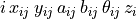, where 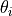 is associated with the ellipses’ major axis, is in degrees and is measured anticlockwise from West, and and
and  are RA and Dec in decimal
degrees).
are RA and Dec in decimal
degrees).
Note that the redshifts of the sources are defined in this catalogue. It is up to the user to provide sensible estimates for them.
int1 is actually more than just a switch: it defines the form of the likelihood used in the optimisation.
int1 = 1: use the magnification matrix to convert arclet to source shape matrix. Then, minimise the deformation estimator 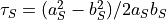 (Eq. 2.95 Kneib PhD 1993, Kochanek 1990) in the calculation.
calculation.int1 = 2: same as 1 with redshift optimisation (not yet implemented)int1 = 3: Minimise the arclet orientations using the estimator 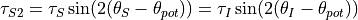, where 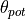 is the orientation of the shear (Eq. 2.118 Kneib PhD 1993).int1 = 4: Minimise the arclet orientations using the estimator 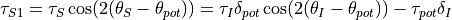 (Eq. 2.118 Kneib PhD 1993), where 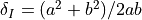 is the distortion parameter of the image (Eq. 2.94 Kneib PhD 1993, Kochanek 1990).int1 = 5: use the magnification matrix to convert arclet to source shape matrix. Minimise the distortion parameter 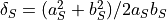, assuming an uncertainty 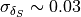.int1 = 6: use the magnification matrix to convert arclet to source shape matrix. Minimise the quadratic sum of the ellipticities 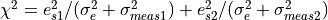, where 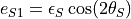, 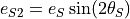 and 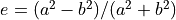. 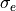 is specified by the [[ImagE#sigell-int1-float-int2|sigell]] keyword.int1 = 7: equivalent to 6, but without the use of shape matrix. In this case 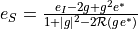 (Eq 4.6 Bartelman & Schneider 2001), where 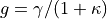 is the reduced shear. This should be slightly faster than int1 = 6 (TBC).
int2 specifies the format of the arclet catalog.
int2 = 1:ID RA DEC A B THETA Z MAG(default)int2 = 2:ID RA DEC A B THETA Z MAG VARE1 VARE2int2 = 3:ID RA DEC E1 E2 Z VARE1 VARE2
Note that E1 and E2 are internally converted to major and minor axis assuming  , and 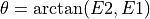.
, and 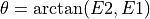.
sigell int1 float int2
If true, the width of the (assumed Gaussian) intrinsic ellipticity distribution can be specified here (the default value is 0.3).
Setting int2 to -1 freeze up this parameter so that it can be inferred from the data (this option is not yet operational)
z_arclet float
In the case of arcletstat, it is possible to fix the redshift float of one arclet indexed by int in the arcletstat filename. In this case, any arclet with redshift set to 0 in the arclet file, will be attributed this value.
critic int1 float1 float2 float3 float4 float5
int1 = 0: if false int1 = 1: if true.
If true will add the constraint of the position of the break (locus of merging images) and the orientation of the image at the break (i.e. the direction of amplification matrix).
float1x position (in arcseconds) of the break.float2y position (in arcseconds) of the break.float3direction of the orientation of the image at the break point, expressed in degree from the horizontal line, counter-clockwise.float4error of position (in arcseconds) of the break along the arc.float5redshift of the source of the merging images.
Note: it is possible to give more than one such a constraint, from merging points at different position and different redshifts. One has simply to enter as many critic lines as merging points.
newton int1
int1 = 0: if false int1 = 1 : if true
If true will use the Newton gradient algorithm to solve the lens equation and search for multiple images. Otherwise will use the default bi-triangles transportation algorithm.